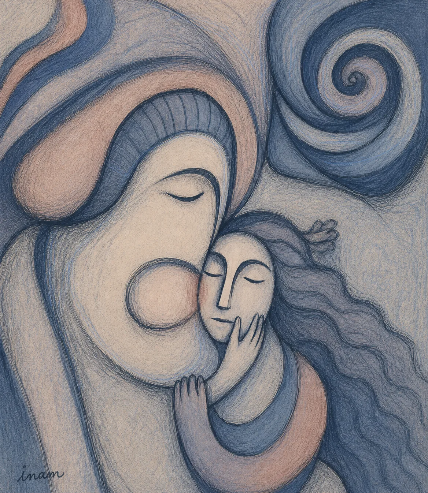
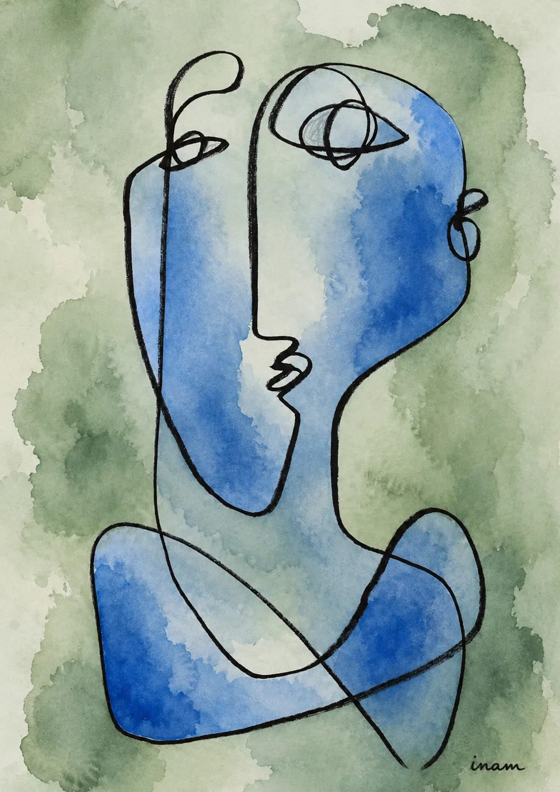
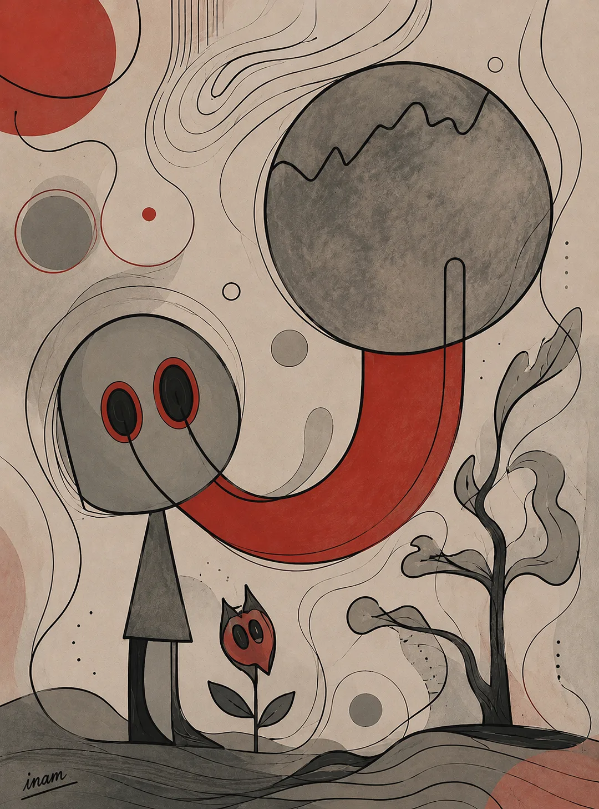
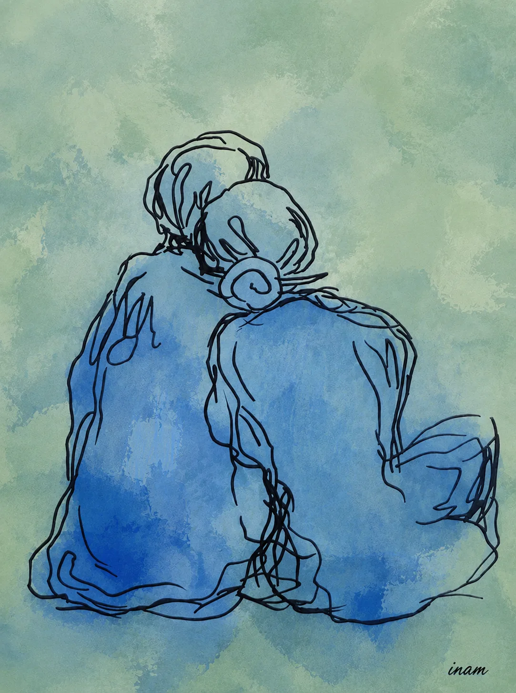
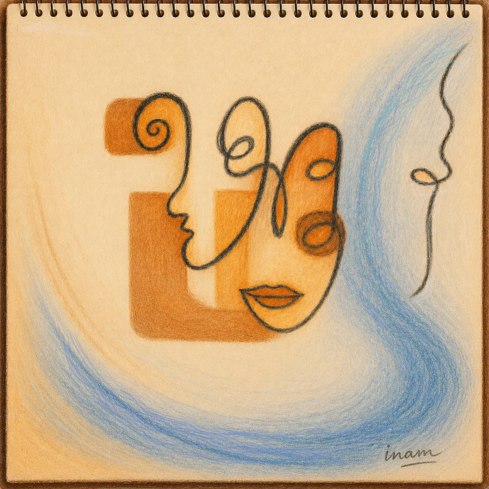
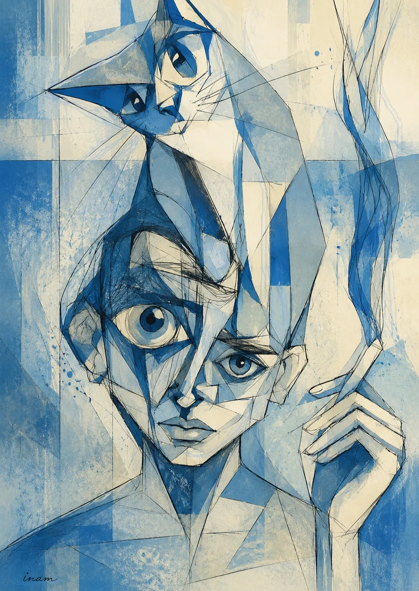
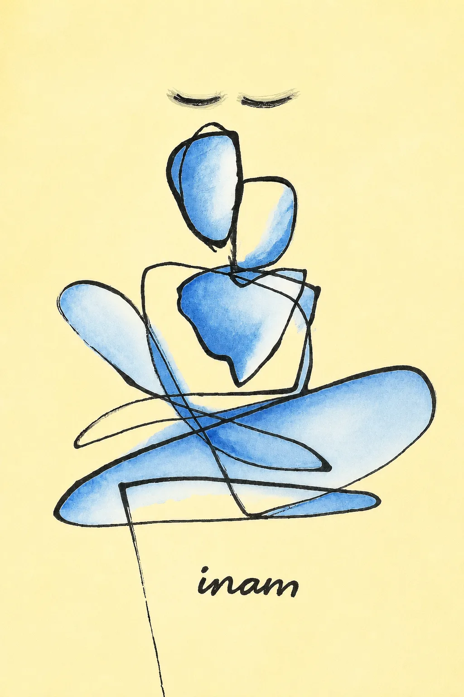

Nightwatch
Cheek to cheek, both of them asleep. The cat will not move all night, and that is the whole arrangement.

The Mouth That Keeps Me
Somebody is curled up inside the open mouth. Not swallowed. Kept.

There Is a Theory
A head on a shoulder and hair over everything. She has done this before, and will do it again tomorrow.

What Floats, What Doesn’t
One face above the water and one below it, and a boat too small to be any use to either.

One Line, Two People
Two faces drawn without the pen leaving the paper. There is no point along it where one of them ends.

The Red Hour
Grey ground, grey people, a moon with a bite taken out of it. The only colour is the flower the small one is holding.

The Quiet After
Two people sitting with their backs to you. Whatever it was, it is finished now.

Synthetic Reverie
Orange laid over blue on a sketchbook page. Faces put together out of whatever was on the desk.

The Cat Knew First
The cat is watching something above the frame. The face underneath has come apart trying to see it too.

We Grew Into the Tree
Two people holding on long enough to become the trunk. The roots arrived afterwards.

The Weather Was Only Above Us
All that weather in the top half. Down at the bottom, two people and a sunflower, not looking up.

Sitting With It
Cross-legged, head tipped back, eyes shut. Not solving anything — just staying in the room.

Paper Garden
Leaves with corners on them. Cut and folded rather than grown, and none of it needs watering.

What the Hands Remember
Two hands with a spiral drawn into each palm. Whatever they held went round, and came back round.

Sleeping Through the Good Part
Asleep in all that yellow, with the sunflower right there beside her, unseen.
These start as things I see with my eyes shut.
Some of them are tender and some of them are not, and I have given up sorting them into two piles. A dream never tells you which kind it is until you are already inside it.
Most are drawn in one line, without lifting, because that is how they arrive — all at once, or not at all.